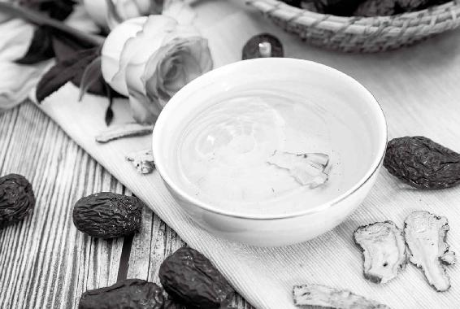

什么样的年份人体容易生什么病（不仅是传染病，也包括其他普通的急性病和慢性病），什么样的年份容易出现传染病，遇到什么样的气候条件会发生，会在什么时候开始，什么时候消退……古人总结的这些规律，《黄帝内经》都有记载。

中国古人很早就发现，四季并不是简单的循环重复。每一年的天象、气候、自然环境都会有一点区别，并会影响到万物的生长，也影响人的身体。
在古代，“物”这个字专门指生物，包括植物、动物、人，也包括细菌、病毒。
所以，在同一个年份，有的生物长得好，有的生物长得不好。同一种生物，有的年份长得不好，有的年份生长旺盛。
比如，在同一年，一种水果丰收，另一种水果减产；一种体质的人身体好一点，另一种体质的人容易生病。
又比如，同一种水果，有的年份丰收，有的年份减产；同一种病毒，有的年份不出现，有的年份造成疫病流行。
因此，在不同的年份，人们应该防范什么疾病，用什么饮食调理，用什么药物来治疗，也有区别。
古人总结的这些规律，都写在《黄帝内经》里面了。
中国的农历是以干支纪年，十个天干和十二个地支相配，一共60个，用来给不同的年份命名，称为六十甲子。每60年为一个小周期，每3 600年为一个大周期，以此类推。
《黄帝内经》在以“60”为一个轮回的周期中，对每个不同的年份，自然界的变化及其对植物、动物和人的身体的影响，都有具体的说明，而且与历朝历代的实际记录对照来看，目前为止都是准确的。
这不是玄学，而是古人经过数千年对自然现象的细致观察，总结出的一套自然规律。
每一年的气候如何，自然环境会发生什么样的变化，动物长得怎么样，植物长得怎么样，人体会怎么样，《黄帝内经》全部都有详细、准确的记载，包括什么样的年份人体容易生什么病（不仅是传染病，也包括其他普通的急性病和慢性病），什么样的年份容易出现传染病，遇到什么样的气候条件会发生，会在什么时候开始，什么时候消退……
我们有空可以多读一读《黄帝内经》的原文，了解这些自然规律，就能预知病毒来袭，做好预防，在下一次流行病袭来时，能够顺时而为，心安不惧。
己亥年（2019年）深冬人体易生病，而且不容易好转。普通人群注意预防呼吸道传染病。
庚子年的初之气2020年1月20日3：00到3月20日23:00这两个月容易出现的问题：
流感（流行性感冒）、动物和人的传染病、各种炎症和皮肤问题。
——《顺时生活：2020健康日历》
提前半年根据《黄帝内经》理论对明年做一个预测，是我每年6月开始撰写第二年的《顺时生活》健康日历书的必做工作。
为什么在2018年出版的《顺时生活》（2019健康日历）和2019年出版的《顺时生活：2020健康日历》两本书里，我反复提示2019年深冬到2020年初春的传染病，而且明确时间是从小雪节气到惊蛰节气呢？
这都是来自《黄帝内经》的启示。
根据《黄帝内经》分析：己亥年深冬易暴发“疠病”（瘟疫、厉害的传染病），己亥年（猪年）、庚子年（鼠年）交接之际（2020年1月），为“大病之始”。
那么，是不是每个己亥年都有相同的疫病发生呢？不一定。
正如每一年的发展不会重复上一年，每个60年的周期的遭遇，也不会完全重复上一个60年。
这一次的“疠病”到底有多厉害？具体是什么病？需要往前追溯，至少也要从1924年开始研究。
其中，读者们都经历了的丁酉年（2017年）是一个重点，己亥年（2019年）也是一个重点，结合《黄帝内经》所讲的其他因素，综合起来就是我在2019年夏天，对半年后将要发生的厉害的传染病的预测分析的依据。
2019年年底开始的传染病，起于2017年的“燥”，长于2019年的“湿”，成于己亥年终之气（2019 年11 月22 日6：00到2020 年1 月20 日2：00）的“湿热”，化于庚子年初之气（2020年1月20日3：00到3月20日23：00）的“寒”，将终于庚子年二之气（2020年3月21日0：00到5月20日20：00）的“暖风”。
其中，庚子年初之气的“化”指疫情的演变，一是热极生寒，二是盛极而衰。
以上是我根据《黄帝内经》所做的分析。
古代没有现代“流感”“肺炎”这些病名，所以那时我只能分析到这个传染病的主要症状是发热、咳嗽，伴有肠胃症状，并且是动物和人都感染，因此在书里写的是防范“动物和人的传染病”。
丁酉年（2017年）须润“燥”，戊戌年（2018年）须清“火”，己亥年（2019年）须祛“湿”……
每一年养生的重点是不一样的。
若是顺时调养，就能提高身体的抵抗力；若是没有顺时调养，这些致病因素就会潜伏在人体内，遇到合适的时机（比如感染病毒）就会发病。
2017年是丁酉年，这一年反常地“燥”。按《黄帝内经》的理论，这种燥会埋下隐患——“三年化疫”。
2017年有多“燥”呢？回顾一下我2017年发表在“允斌顺时生活”公众号的部分文字：
（2017年）春季的旱情比往年都重。
——2017年6月21日发表《夏至：今年的养生重点》
今年……秋行春令，霜降后迟迟不冷，还特别燥。
感觉燥（口干、皮肤干、干咳）的朋友，除了要坚持吃银耳，还可以多吃一些莼菜、百合等滋阴润燥的食物。
——2017年11月21日发表《小雪：“补肾养藏汤”今年的喝法》
再过六六三十六天，我们就将告别丁酉年的岁运，进入戊戌年的岁运中。这是从传统养生的角度来计算的。
今天是甲子日，是今年最后一轮干支循环的第一天。
今天清晨，太阳刚出来就隐没入云层。
辰时，我在家中阳台静坐，果然等到了太阳最终冲破云层而出的刹那，天空出现绚丽的云霞，之后是阳光灿烂。
今年年初，我在音频里说过，丁酉岁不是一个太好的年份。现在我们已经看到了结果。
很多朋友可能在这一年都有送走身边亲友的经历。请注意：今年冬至更是一个紧要关头。
望朋友们保重自己，照顾好家人。起居与太阳同步，饮食增加滋补，多静养，少操劳。不论大自然给予我们什么，我们只要顺应之，与万物一起沉浮于生长之门。凡事顺时而为，不强求，可以事半功倍，可以身安、心安。
——2017年12月3日发表《丁酉年岁末养生》
以上是我对2017年气候反常的部分记录。
《黄帝内经》认为，在一些特定年份，如果气候反常，埋下隐患，就会“三年化疫”。
2017年反常的“燥”，就给人体的肺埋下了病根。燥气伤人，如果不及时调理，潜藏日久，就会使人咳嗽。所以，新冠肺炎虽然病机以“湿”为主，却有不少患者同时伴有“燥”的症状，感觉咽干、咽痛，就是这个原因。疫情第一个月的统计数据显示，76%的患者有干咳症状。（数据出自《新型冠状病毒肺炎中医诊疗手册》，中国中医药出版社，2020年2月出版）
这给普通读者什么样的启发呢？就是要注意，“风、寒、暑、湿、燥、火”这六种外气都会伤人。如果当时不发病，潜伏下来，年深日久，更难辨识和应对。所以，遇到气候反常的年份，要特别注意及时调养。
例如，在有“燥”的时节，及时做好润肺的功课，可以有效预防今后的咳嗽。
还记得我在《回家吃饭的智慧》中“银耳”一篇中分享的病例吗？每年秋冬都会咳嗽的那位男性，就是被燥气所伤。
《黄帝内经》说：“秋伤于燥，冬必咳嗽。”所以，我们在秋季开始吃银耳来润肺，是十分重要的。
若是等到在人体中潜伏已久的“燥”发出病来，那时用润肺之法已不可补救。因为此时往往身体是内有伏燥，外有致病邪气相侵，一味润肺则不能祛邪。
因此，新冠肺炎虽然有“燥”的伏笔，却得以祛湿为主来治疗。因为有“燥”的伏笔，所以治疗起来更为不易。
感染新冠病毒的人，如果体内还潜伏着2017年的燥气，加上2019年的湿气，它们在人体内“打架”，耗伤人体的正气，湿浊壅阻心肺，就会比较难受。
下面继续以新冠肺炎疫情为例，来分析如何顺时防病、治病。时令转换了，防病、治病的重点也要随之调整。
国家卫生健康委员会（简称卫健委）于2020年1月23日发布的《新型冠状病毒感染的肺炎诊疗方案（试行第三版）》中说新冠肺炎的病机为“湿、热、毒、瘀”，一共讲了四种因素，我看到后，有一点不同想法。
当时已进入大寒节气四天了，己亥年深冬的“热”已是过去时（己亥年最后两个月我们是用果菊清饮来祛湿热），庚子年初春的“寒”已来临（我们改用桂芝陈皮羹来祛寒）。治“热”，已不合时宜。
防治新冠肺炎，我认为“湿”才是最关键点。
为什么呢？我把原因写在了2020年1月24日发表的文章中。
国家卫健委《新型冠状病毒感染的肺炎诊疗方案（试行第三版）》说，新冠肺炎的病机为“湿、热、毒、瘀”。
我认为，“湿”很可能才是最关键点。
过去的2019年是己亥“土”年，这种年份按《黄帝内经》说的规律是雨水多，人体湿气重。一些读者朋友们自2018年8月从《顺时生活》（2019健康日历）和公众号都看到了，也做了预防。
事实的确如此，2019年南方下了很多雨，北京也难得地下了好几场雪。而人体也出现了各种湿气重的表现，这一年来，很多人也留言来分享了切身感受。
看新冠肺炎的死亡病例，我们也会发现，公布的既往病史有糖尿病、高血压、脑梗、慢阻肺……而且几乎都是老人——高龄，又有慢性病或亚健康，大多身体湿气较重。
我也建议普通人如果想预防新冠病毒，可以每日吃一些祛湿的食方（比如茯苓是适合全家老幼每日食用的保健食材），并且用藿香、佩兰、苍术等芳香祛湿化浊的中药，做成香包、药浴液、洗手液等外用，来加强防护。
——2020年1月24日发表《预防新冠肺炎的4个中药方如何选》
2020年1月27日，国家卫健委发布《新型冠状病毒感染的肺炎诊疗方案（试行第四版）》，对第三版进行了修正，删除了病机为“湿、热、毒、瘀”的说法，在治法中突出了“祛湿”这个关键点。
2020年2月19日，国家卫健委发布《新型冠状病毒感染的肺炎诊疗方案（试行第六版）》，推荐了“清肺排毒汤”，这个合方中就包含了两种祛湿经典方，一是苓桂（茯苓、肉桂）方，二是二陈（半夏、陈皮）汤，并加上了祛湿的藿香。事实证明，这个方子的效果特别好。2020年3月24日，国务院联防联控机制发布会上，国家中医药管理局介绍，清肺排毒汤截至23日的样本数据，1 265例确诊患者没有一例转为重型，没有一例转为危重型，98%以上患者已经治愈出院。重点观测的57例重型患者中，42例已经出院，服用清肺排毒汤的患者没有肝肾损伤。
人民日报官方微博在2020年2月6日发布消息称，观察这次新冠肺炎的病例，无论是住在ICU的危重症患者，还是轻症患者，舌苔普遍都很厚腻，这表示身体内的湿浊非常重。
湿气，的确是“万病之源”。湿气重的人，更容易染病，也更难治愈。
读者朋友读到这里，可以找一面镜子，伸出舌头观察一下，如果舌苔比较厚、比较腻，那么不要拖延，马上开始祛湿的调理。日常饮食中多加一些祛湿的食材，比如茯苓、陈皮，这两样药食同源的材料，健脾祛湿有特效，又特别平和，可以长期坚持吃。
在《顺时生活：2020健康日历》中，我对于2020年年初传染病结束时间的预测是到惊蛰节气为止，即春分日之前。这也是根据《黄帝内经》来分析的。
观众问：老师能否预测一下这次疫情的持续时间？
允斌答：根据《黄帝内经》，我认为应该在今年的惊蛰节气期间（2020年3月5日10：57到3月20日11：50），疫情就差不多能够平息了。我们到时候可以看一看。
在《顺时生活：2020健康日历》这本书中，我提示了己亥年和庚子年相交的这段时间，会有传染病发生。这本书是2019年9月出版上市的。
去年写稿时，我是忠实地把根据《黄帝内经》所分析的内容写在了我的日历书里的：在己亥年的冬天与庚子年的春天这样一个交接的时期，会发生比较厉害的传染病，并且可能就是由动物传人的传染病。
现在的的确确发生了。由于古代没有现在这些病名，所以《黄帝内经》不会说是“流感”，也不会说是“肺炎”，只是讲了症状，我发现这些症状全部都是呼吸道病毒感染的症状。当时我就想，厉害的呼吸道传染病能有什么呢？我真的都不敢想是类似于“非典”这种严重的传染病，如果那样，写在书里，真的是耸人听闻了，所以我在书里只写了这段时间要注意防范动物和人的传染病。
所以，《黄帝内经》里的智慧真的是超乎我们后人想象的。
事实上，我个人对《黄帝内经》的理解，不一定完全正确，我只是按照我个人的理解，写在了2020年的日历书里。
每个节气我都写了，在这个节气中可能会发生什么样的情况，有什么样的病症等。有兴趣的朋友可以参考。
个人感觉与其风声鹤唳地出门买酒精、买消毒液、买鱼腥草，不如自我安慰，不要恐慌，平心静气。毕竟，如果过去的一年亏待了自己的身体，临时抱佛脚也是无法弥补的。谁让昨日之日不可留呢？如果无法放下紧张的情绪，无法让焦虑随风而去，那就干脆记住它。不去后悔“没有做”和“来不及”，而是反思自己的生活方式，或许也是这次疫情带来的启示呢！
——一丹
允斌点评：非常好的总结！若昨日之日能够未雨绸缪，今日之日就不会多烦忧。除夕那天，儿子将他新一年的目标计划做成了手机屏幕保护图，每日打开手机便可提醒自己先做重要的事。
老师的日历年年买，每个节气的易发疾病我都很认真地看，因为我知道老师是有科学依据的。今年的肺炎疫情，老师早就预测到了，我整个冬天都很小心很认真地佩戴二十四节气香囊和防疫香包。
——琦琦
事实上任何感冒病毒一旦进入活体都是没有特效药可以杀死的！所有医疗都是对症治疗并发症或基础病。感冒病毒要么被强大的免疫力战胜，要么和宿主共存，使宿主成为传播者。顺时生活使大家提高了免疫力，只要不被感染、不乱吃药，就可安全渡过这次难关。
——三馨
打开正确的生活方式就是从陈允斌老师的健康日历开始！看着天气一天天地变暖，读着陈允斌老师的文章，跟随节气的变化更新食方，生活真的充满正能量！小康生活就是小日子里有健康的良方。通过顺时而食的生活方式，自己的身体变得越来越好。
——仁者不忧
2020年1月1日陈老师的《顺时生活：2020健康日历》书中的《黄帝内经》选文为：“故美其食，任其服，乐其俗，高下不相慕，其民故曰朴。” 跟着老师学养生，每日都过着这样平淡的生活，实在是一种幸福！
——梅